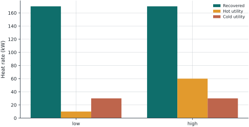

9 A shared design for two operating states
Problem 09 | Heat Recovery Network Design | Level 3: Open-ended challenge
9.1 Problem Statement
Two fixed-temperature heat sources provide 120 kW at 180 °C (H1) and 80 kW at 110 °C (H2). Heat users require 100 kW at 150 °C (C1) and 100 kW at 80 °C (C2). A minimum approach of 20 °C allows H1-C1, H1-C2, and H2-C2; H2-C1 is forbidden. These are isothermal source/sink surrogates, not sensible-heat streams with temperature profiles.
| Match | Maximum recovered heat (kW) | Daily installation charge (USD/d) |
|---|---|---|
| H1-C1 | 100 | 25 |
| H1-C2 | 90 | 20 |
| H2-C2 | 70 | 18 |
Hot utility costs 1 USD/(kW d); cold utility costs 0.15 USD/(kW d). These coefficients already convert a constant daily heat rate to a daily cost. Do not multiply by 24 again. Utilities are available at suitable temperatures without capacity limits. All unused source heat must be rejected.
Your task. Choose exchangers before the operating state is known. In the low state, C2 requires 80 kW and hot utility costs 1 USD/(kW d). In the high state, C2 requires 130 kW and hot utility costs 2 USD/(kW d). Both states have probability 0.5. C1 remains at 100 kW. Limit total daily installation charges to 45 USD/d. Operating flows may adapt after the state is observed.
9.1.1 Before you code
Which variables must be shared across states? Why is solving each state independently and averaging the costs too optimistic for one physical network?
9.1.2 Deliverables
- Define decision variables, units, objective, and constraints. State which data and assumptions are fixed.
- Predict one feature of the solution and explain why it should occur.
- Build and solve a Pyomo model. Check balances and bounds independently.
- Interpret the result and investigate the follow-up question below. For an open-ended challenge, state and defend your chosen policy separately from the reference solution.
9.2 Model Formulation
Let \(q_{hcs}\ge0\) be recovered heat on an allowed match, \(u_{cs}\ge0\) hot utility, and \(v_{hs}\ge0\) rejected heat, all in kW. Let \(z_{hc}\in\{0,1\}\) select an exchanger. For each operating state \(s\), \[\sum_c q_{hcs}+v_{hs}=H_h,\qquad \sum_h q_{hcs}+u_{cs}=D_{cs},\qquad q_{hcs}\le\overline Q_{hc}z_{hc}.\] Only allowed matches appear in the sums. The first balance accounts for surplus heat, while the second prevents counting recovered heat twice. Installation charges are daily equivalents of ownership costs, not one-time capital expenses.
Use shared \(z_{hc}\), state-specific heat and utilities, and \[\sum_{h,c}K_{hc}z_{hc}\le45,\] \[\min C=\sum_{h,c}K_{hc}z_{hc}+\sum_s\pi_s\left(c_s^H\sum_c u_{cs}+0.15\sum_hv_{hs}\right).\] The fixed charge appears once. The objective includes expected operating cost, while the two sets of heat balances ensure feasibility in both states. This is a two-stage stochastic MILP for a finite set of states.
9.3 Pyomo Implementation
The code below is the model-building portion of models/heat.py. The level argument selects this problem’s assumptions. Run the complete module from the source bundle to reproduce the solution, including its independent checks:
~/.venvs/optim/bin/python -m models.heat 3"""Heat recovery between fixed-temperature utility-like streams."""
import pyomo.environ as pyo
from models.common import value
HOT = {"H1": 120, "H2": 80} # kW available
ARCS = [("H1", "C1"), ("H1", "C2"), ("H2", "C2")]
CAP = {("H1", "C1"): 100, ("H1", "C2"): 90, ("H2", "C2"): 70}
FIXED = {("H1", "C1"): 25, ("H1", "C2"): 20, ("H2", "C2"): 18} # USD/d
def build(level):
states = (
{"normal": (100, 100, 1.0, 1.0)}
if level < 3
else {"low": (100, 80, 1.0, 0.5), "high": (100, 130, 2.0, 0.5)}
)
m = pyo.ConcreteModel(name="Fixed-temperature heat recovery")
m.A = pyo.Set(initialize=ARCS, dimen=2)
m.H = pyo.Set(initialize=list(HOT))
m.C = pyo.Set(initialize=["C1", "C2"])
m.S = pyo.Set(initialize=list(states))
m.z = pyo.Var(m.A, domain=pyo.Binary)
if level == 1:
for a in m.A:
m.z[a].fix(1)
m.q = pyo.Var(m.S, m.A, domain=pyo.NonNegativeReals)
m.hu = pyo.Var(m.S, m.C, domain=pyo.NonNegativeReals)
m.cu = pyo.Var(m.S, m.H, domain=pyo.NonNegativeReals)
m.hot = pyo.Constraint(
m.S,
m.H,
rule=lambda m, s, h: (
sum(m.q[s, i, j] for i, j in m.A if i == h) + m.cu[s, h] == HOT[h]
),
)
m.cold = pyo.Constraint(
m.S,
m.C,
rule=lambda m, s, c: (
sum(m.q[s, i, j] for i, j in m.A if j == c) + m.hu[s, c]
== states[s][0 if c == "C1" else 1]
),
)
m.cap = pyo.Constraint(
m.S, m.A, rule=lambda m, s, h, c: m.q[s, h, c] <= CAP[h, c] * m.z[h, c]
)
if level == 3:
m.budget = pyo.Constraint(expr=sum(FIXED[a] * m.z[a] for a in m.A) <= 45)
fixed = 0 if level == 1 else sum(FIXED[a] * m.z[a] for a in m.A)
m.obj = pyo.Objective(
expr=fixed
+ sum(
states[s][3]
* (
states[s][2] * sum(m.hu[s, c] for c in m.C)
+ 0.15 * sum(m.cu[s, h] for h in m.H)
)
for s in m.S
)
)
m._states = states
return mThe common solve function calls appsi_highs, checks optimal termination before loading a solution, and checks constraint residuals, bounds, and integer domains. After building the model, use:
from models.common import solve
m = solve(build(3))9.4 Optimal Solution
The reference objective is 112.5000 USD/d. This value is optimal for the explicitly stated model and data.
| State | Match | Installed | Heat (kW) |
|---|---|---|---|
| low | H1 to C1 | 1 | 100.0000 |
| low | H1 to C2 | 0 | 0.0000 |
| low | H2 to C2 | 1 | 70.0000 |
| high | H1 to C1 | 1 | 100.0000 |
| high | H1 to C2 | 0 | 0.0000 |
| high | H2 to C2 | 1 | 70.0000 |
| Quantity | Value |
|---|---|
| low: hot utility (kW) | 10.0000 |
| high: hot utility (kW) | 60.0000 |
| low: cold utility (kW) | 30.0000 |
| high: cold utility (kW) | 30.0000 |

9.4.1 Check your solution
Check energy balances separately in both states and verify the shared design fits the budget. Enumerate budget-feasible installation patterns.
The automated residual, bound, and integrality audit passed with a maximum violation of 0.00e+00 in model units. Domain-specific checks passed. Model units differ across equations, so this numerical audit does not replace dimensional analysis.
9.5 Brief Discussion
The objective is 112.50 USD/d. The objective includes ownership charges, so its increase relative to the existing-system LP is not an efficiency loss. For a physical exchanger network with varying stream temperatures, stagewise temperature balances and minimum approaches would need to replace this fixed-temperature representation.
9.5.1 Extension to investigate
Recommend a design criterion if the high state becomes rare but disruptive. Compare expected cost with a worst-case criterion and explain what stakeholder preference each expresses.